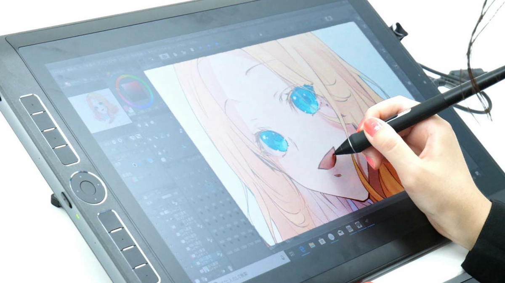

Laptop
It helps the students and teachers to learn to type quickly and accurately. Alan Kay is the one who invented this.
It helps the students and teachers to learn to type quickly and accurately. Alan Kay is the one who invented this.
Computer
It is used actively in education to improve the quality and learning outcomes. Charles Babbage is the one who invented this.
It is used actively in education to improve the quality and learning outcomes. Charles Babbage is the one who invented this.

Pen Tablet
It enables a person to hand-draw images, animations and graphics. Elisha Gray is the one who invented this.
It enables a person to hand-draw images, animations and graphics. Elisha Gray is the one who invented this.

Printer
It is used to generate hard copy and print any document of a person. Johannes Gutenberg is the one who invented this.
It is used to generate hard copy and print any document of a person. Johannes Gutenberg is the one who invented this.
Mobile Phones
It has several applications that can be useful in the teaching and learning process. John F. Mitchell and Martin Cooper of Motorola is the one who invented this.
It has several applications that can be useful in the teaching and learning process. John F. Mitchell and Martin Cooper of Motorola is the one who invented this.

Tablet
Using tablets improves computer skills and encourages independent thinking. Jeff Hawkins is the one who invented this.
Using tablets improves computer skills and encourages independent thinking. Jeff Hawkins is the one who invented this.